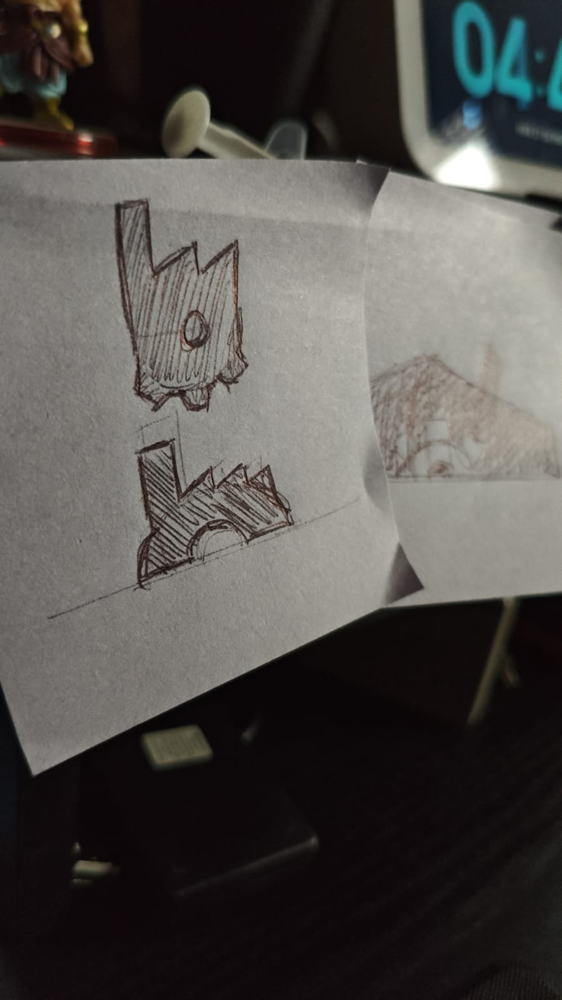
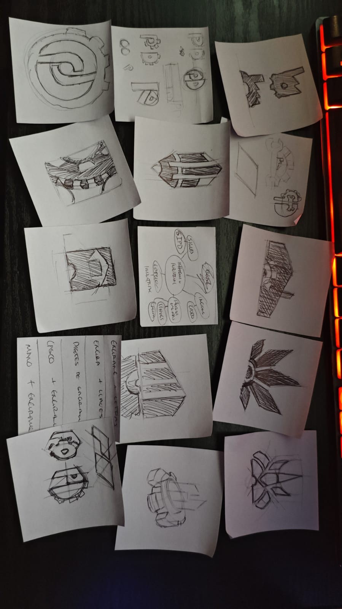

Soluciones Integrales PD
Branding para empresa industrial
El proyecto en dos líneas
Soluciones Integrales PD ofrece servicios de mantenimiento industrial, HVAC y suministros eléctricos en Jalisco. No tenían ninguna imagen de marca y necesitaban una identidad que les diera credibilidad frente a clientes empresariales.
El problema concreto
En el sector industrial, la confianza lo es todo. Los clientes no contratan a una empresa que no parece seria. El reto fue crear, desde cero, una marca que transmitiera experiencia, precisión y confiabilidad, y que funcionara en uniformes, vehículos y redes sociales.
Proceso y decisiones clave
Analicé las empresas de servicios industriales con mejor reputación en México para entender qué señales visuales transmiten credibilidad. Identifiqué un patrón consistente: colores azul-gris o azul-marino, tipografías sans-serif bold y formas geométricas precisas.
- Paleta de alto contraste — azul oscuro y naranja técnico. El naranja funciona como acento de alerta y energía, mientras el azul da seriedad.
- Logotipo geométrico y limpio — forma que evoca precisión técnica y es fácil de aplicar en bordado, vinil y digital.
- Descartamos propuestas con íconos de herramientas (llave inglesa, engrane) porque ya todos los competidores los usan y hacen la marca invisible.
Galería





Impacto y resultados
Con la nueva identidad, Soluciones PD pudo presentarse con credibilidad ante clientes corporativos y licitaciones formales. El cliente mencionó que la imagen profesional fue un factor determinante para cerrar sus primeros contratos de mantenimiento con empresas de mayor tamaño.
Lo que aprendí
En contextos B2B, el diseño debe hablarle al tomador de decisiones, no al usuario final. Aprendí a enfocar las propuestas en la percepción de confianza y experiencia, más que en la originalidad o la expresividad. Aquí la función supera a la forma.